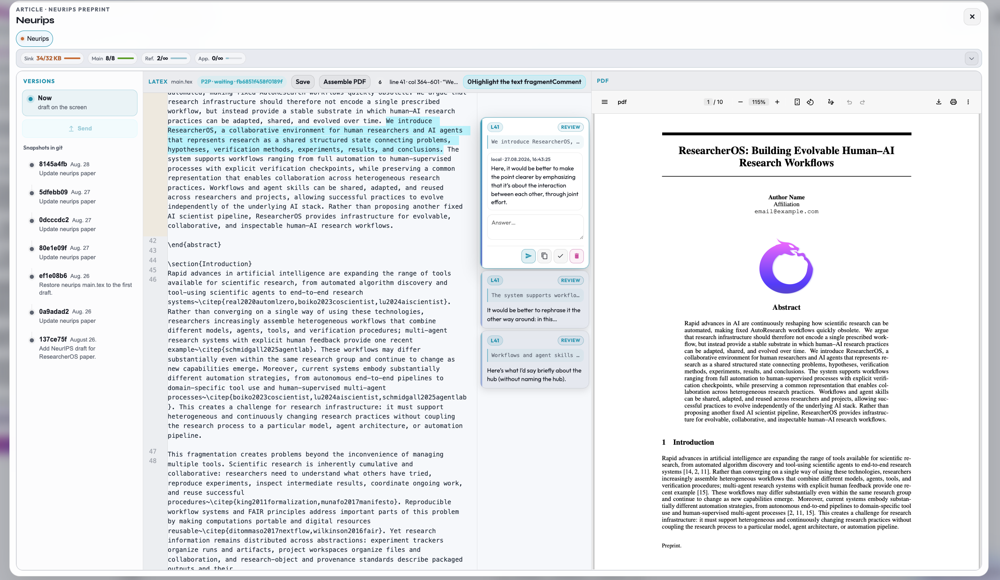

PaperDraft
Черновик научной статьи в проекте: LaTeX и PDF в paper/<slug>/, генерация из контекста исследования, предложения правок от агента с ревью человека, совместное редактирование по Yjs/WebRTC. Долговременная копия — коммиты Git.

Как работает
Кнопка PaperDraft на панели workspace открывает модальное окно статьи. Внутри:
- список статей проекта (вкладки / slug);
- редактор LaTeX (тело или полный файл — по текущей схеме UI);
- превью / сборка PDF;
- генерация или перегенерация из очереди Paper Inbox;
- статус совместного редактирования;
- предложения правок от агента: агент предлагает правки с подсветкой изменений, человек принимает или отклоняет по фрагментам;
- комментарии;
- выгрузка версии в Git (push чекпоинта).
Генерация: задача в .run/paper-queue.json → агент по koi-paper пишет английский LaTeX из дерева, research.json, отчётов и figures → answer собирает main.tex и PDF. Без выдуманных путей к картинкам — только из списка в промпте.
Совместная работа: документ в браузере — CRDT (Yjs); обмен между инстансами — WebRTC (до ~5 человек); signaling только для SDP/ICE (и relay, если DataChannel не открылся). Пиры с разным Git HEAD не синхронизируют текст. Realtime не создаёт коммиты.
Правило продукта: предложения агента по тексту статьи остаются на проверке человека — агент (и ассистент в IDE) не должен сам принимать предложение в основной текст от имени пользователя.
Как человек работает в интерфейсе
- Выберите проект → PaperDraft в доке.
- Первый раз для Paper Inbox: скопировать bootstrap → чат ResearchOS Paper Inbox → «Inbox готов» (в модалке статьи).
- Сгенерировать статью / перегенерировать — статус «Агент работает», затем появление tex/PDF.
- Правите LaTeX в поле; Сохранить пишет на диск; Собрать PDF запускает компиляцию.
- Если пришло предложение правок — в превью сегменты; принять или отклонить фрагмент. Пока предложение активно, поле tex может быть только для чтения.
- Комментарии — кнопка добавления в панели статьи.
- Статус коллаба показывает пиров / ошибки signaling. Для двух машин — одинаковые
KOI_COLLAB_*в.env. - Push версии — зафиксировать рукопись в Git, когда нужна долгая точка сохранения.
Какие сценарии для агента подключаются
| Сценарий (skill) | Роль |
|---|---|
koi-paper |
Очередь UI: claim → context → LaTeX → answer (PDF). |
| Paper Inbox | koi.paper.inbox_cli, wake PAPER_WAKE. |
| Контекст проекта | Дерево, инсайты, отчёты, figures — уже в промпте context; отдельно «читать всё подряд» не нужно. |
| (коллаб) | Клиент paper-collab.js / paper-webrtc.js; сервер signaling в koi/paper/collaboration/. |
python -m koi.paper.cli pending
python -m koi.paper.cli claim <queue_id>
python -m koi.paper.cli context <queue_id>
python -m koi.paper.cli answer <queue_id> -f paper-body.txt
python -m koi.paper.inbox_cli watch
Как устроено технически
Файлы
Обычно koi-structure/paper/<slug>/ — main.tex, PDF, ассеты, метаданные прогресса (в UI есть блок настроек прогресса). Точный layout slug’ов задаёт backend paper API.
Очередь и API
Пакет koi/paper/ (cli, inbox, сборка). Клиент: #paper-modal в web/index.html, логика в web/app.js (состояние статьи, генерация, предложения правок, статус коллаба).
Realtime
- Yjs-документ в браузере;
- полная сеть WebRTC между инстансами;
- комната от Git remote + slug + путь файла;
- несовместимый
HEAD— без обмена апдейтами; - переменные:
KOI_COLLAB_SIGNALING_URL,KOI_COLLAB_TOKEN_SECRET, STUN/TURN.
Чеклист и деплой signaling: docs/paper-collaboration-spike-b.md. На главной features-странице раздел «Синхронизация» описывает, как это стыкуется с Git.
Ограничения
- Генерация на английском под шаблон конференции (NeurIPS-ориентированный поток в скилле).
- Без совместимой Git-базы коллаб между машинами не стартует.
- Предложение правок без явного принятия человеком в основной текст не должно попадать.
Связанные страницы
Текст: content/paper.md. Медиа: media/paper-hero.*.